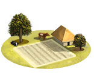
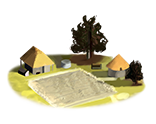
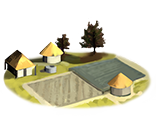
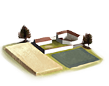
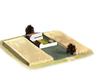

Imperium
Imperium Farms chain
5 levels, each replacing the one before it — you upgrade in place rather than building alongside.
Farms → Farms+1 → Farms+2 → Farms+3 → Farms+4
Pictures are the game's own building art. Where a culture ships none of its own, the game falls back to another culture's, and that is what is shown here.
Levels at a glance
| Level | Cost | Build time | Minimum settlement | Upgrades to | Level | Cost | Build time | Minimum settlement | Upgrades to | ||
|---|---|---|---|---|---|---|---|---|---|---|---|
 | Farms | 1,200 | 2 | town | Farms+1 |  | Farms+1 | 2,400 | 4 | large town | Farms+2 |
 | Farms+2 | 4,800 | 6 | city | Farms+3 |  | Farms+3 | 7,200 | 8 | large city | Farms+4 |
 | Farms+4 | 12,000 | 10 | huge city | — |
Costs in denarii, build time in turns.
Farms

The game files carry no description for this level — every culture's entry is a placeholder, so there is nothing to quote.
| Cost | 1,200 denarii | Build time | 2 turns | Minimum settlement | town |
| Upgrades to | Farms+1 |
What it does
Show 3 effects that apply only in the circumstances shown
- +1 farming level — only when
not resource grain and not resource sulphur - +2 farming level — only when
resource grain or resource sulphur - +1 trade income — only when
resource olive_oil or resource wine or resource dates or resource fruits
Farms+2

The game files carry no description for this level — every culture's entry is a placeholder, so there is nothing to quote.
| Cost | 4,800 denarii | Build time | 6 turns | Minimum settlement | city |
| Upgrades to | Farms+3 |
What it does
Show 3 effects that apply only in the circumstances shown
- +3 farming level — only when
not resource grain and not resource sulphur - +4 farming level — only when
resource grain or resource sulphur - +1 trade income — only when
resource olive_oil or resource wine or resource dates or resource fruits
Farms+4

The game files carry no description for this level — every culture's entry is a placeholder, so there is nothing to quote.
| Cost | 12,000 denarii | Build time | 10 turns | Minimum settlement | huge city |
What it does
Show 3 effects that apply only in the circumstances shown
- +5 farming level — only when
not resource grain and not resource sulphur - +6 farming level — only when
resource grain or resource sulphur - +1 trade income — only when
resource olive_oil or resource wine or resource dates or resource fruits
Farms+1

The game files carry no description for this level — every culture's entry is a placeholder, so there is nothing to quote.
| Cost | 2,400 denarii | Build time | 4 turns | Minimum settlement | large town |
| Upgrades to | Farms+2 |
What it does
Show 3 effects that apply only in the circumstances shown
- +2 farming level — only when
not resource grain and not resource sulphur - +3 farming level — only when
resource grain or resource sulphur - +1 trade income — only when
resource olive_oil or resource wine or resource dates or resource fruits
Farms+3

The game files carry no description for this level — every culture's entry is a placeholder, so there is nothing to quote.
| Cost | 7,200 denarii | Build time | 8 turns | Minimum settlement | large city |
| Upgrades to | Farms+4 |
What it does
Show 3 effects that apply only in the circumstances shown
- +4 farming level — only when
not resource grain and not resource sulphur - +5 farming level — only when
resource grain or resource sulphur - +1 trade income — only when
resource olive_oil or resource wine or resource dates or resource fruits